The Problem
We wanted to investigate how might we solve the problem of loneliness in public spaces. Union is known for being a central location for people to gather. It seemed appropriate to utilize this space as a testing ground for experiments investigating how to make strangers interact.
Proposed Solution
In order to solve the problem of loneliness, we are creating an interactive experience to help strangers make friends.
History of Union Square
Union Square started out as a potter’s field, or a burial place for the poor and those without families. Named to describe the intersection , or union, of Broadway and 4th Avenue. It opened to the public on July 19, 1839. In 1872 the park was redesigned by Frederick Law Olmsted and Calvert Vaux. They removed the perimeter fence, widened the sidewalks, planted more greenery, and created open areas for public gatherings and events. In 1929 the subway stations were put in, making the park more accessible.
Union Square today is divided into sections. The south section of the park features performers, demonstrators, and street vendors. The North features The Pavilion restaurant, with the central section of the park boasting green spaces, benches, a playground, dog park, and seating area filled with tables and chairs.
Observations of Union Square
During our initial observation day, the park was bustling. The weather was warm and many people stopped to eat lunch or chat with friends along the benches. In the morning the area we observed saw people commuting to work and some runners. Midday until afternoon were the busiest times. During the evening the section of the park with tables and benches was closed, but there were still people walking within the central portion of the park.
On the day we did our first few prototypes, it was extremely cold and windy. The Greenmarket was in session so the park was bustling with people. While a few people did stop to enjoy some lunch or read on a bench, most of the traffic was people walking through the park.
Initial Process
We created cup phones in various lengths. The phones were created by punching holes in the bottom of solo cups, feeding the string through and tying a large knot.
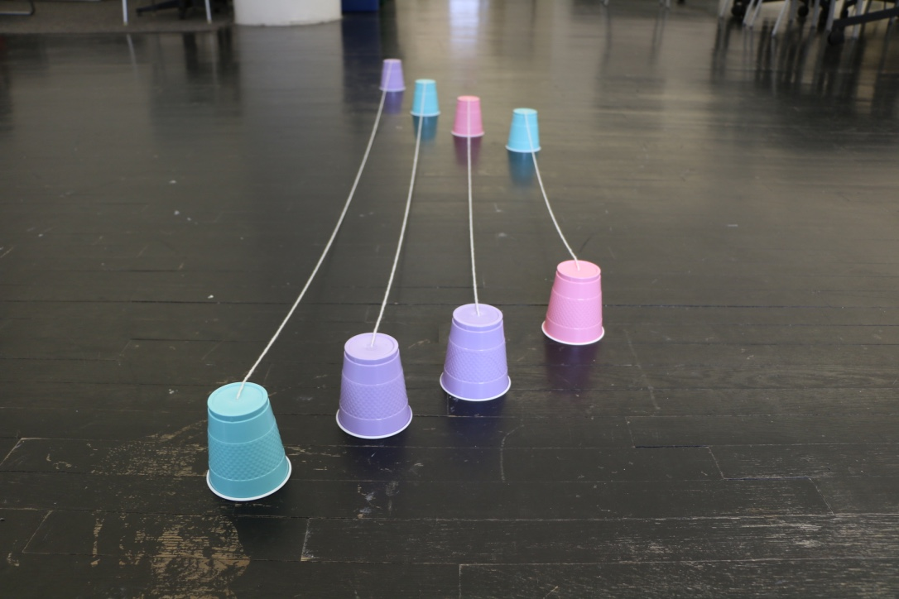We wanted to be able to experiment with how the sound quality would change. We also wanted to experiment with how stranger’s ability to connect would be affected by physical distance between them.
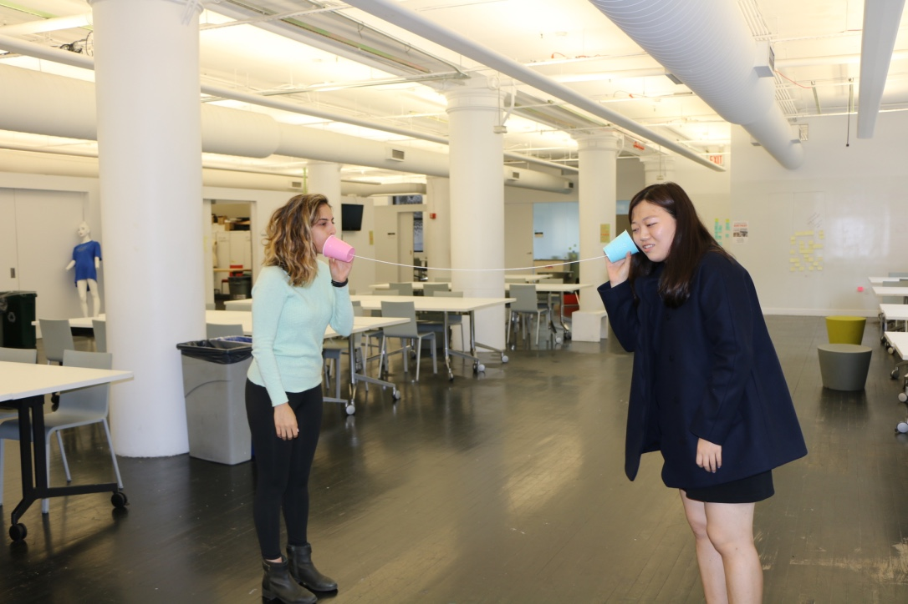We tested the phones on campus first to make sure that they were all working. We discovered that as long as the string is taught, the length of the string did not change the sound quality.
Not all of our prototypes were successful. We attempted to make the cup phone more inclusive by tying together the strings of two different cup phones. While we loved the look and feel, and role of the prototype, it didn't function.
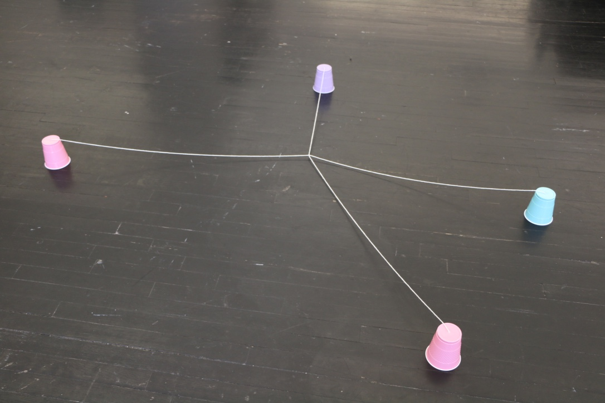We created signs in order to indicate to strangers what the cup phones were. We were concerned about the possibility of said cups being mistaken for garbage if there was no indication that they were part of an interactive experience.
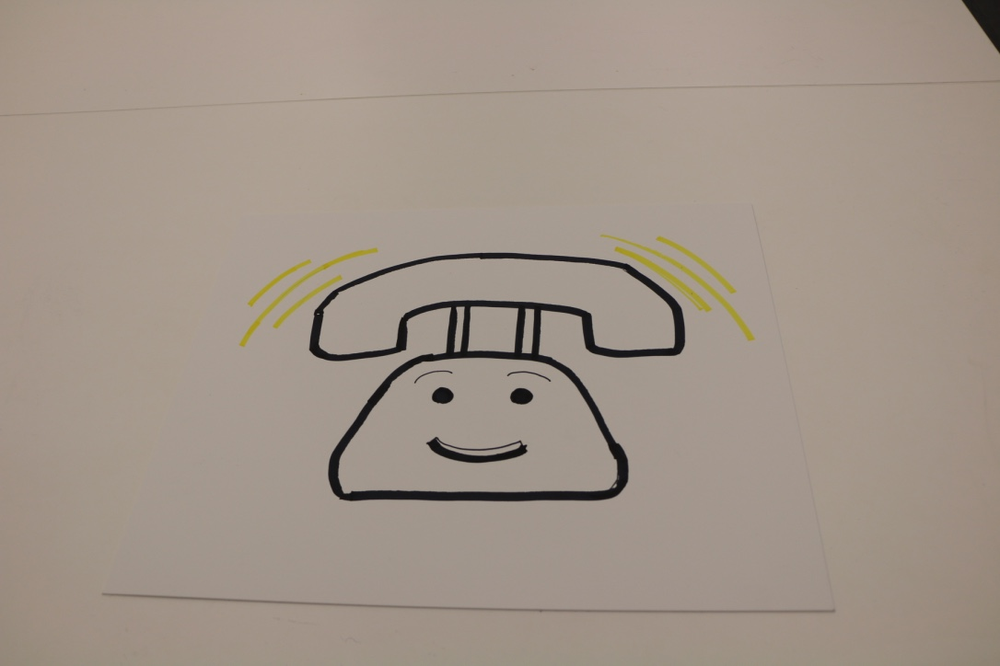The first sign we made was of a telephone ringing. The intention of this imagery was to jog stranger’s memory, causing them to remember the childhood game of telephone. Next we made a sign that showed two people using the cup phones.
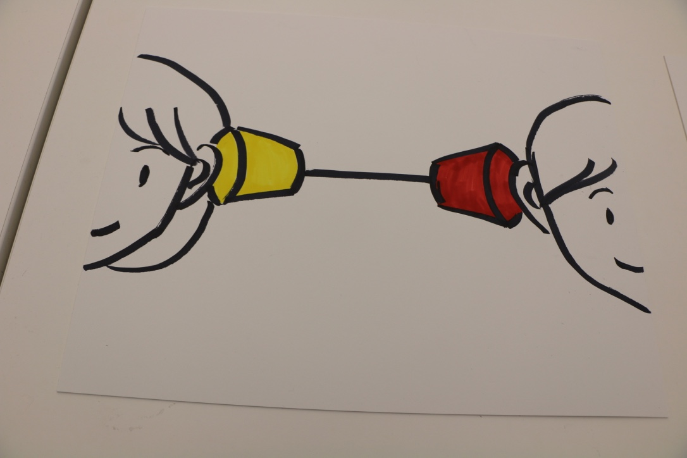First Prototype
The initial prototype we tried consisted of spreading the plastic cups around the tables. We placed the longer phones across two tables and the shorter cups on a single table. We were curious to see if people were more likely to use the cups if they were closer or farther apart from strangers.
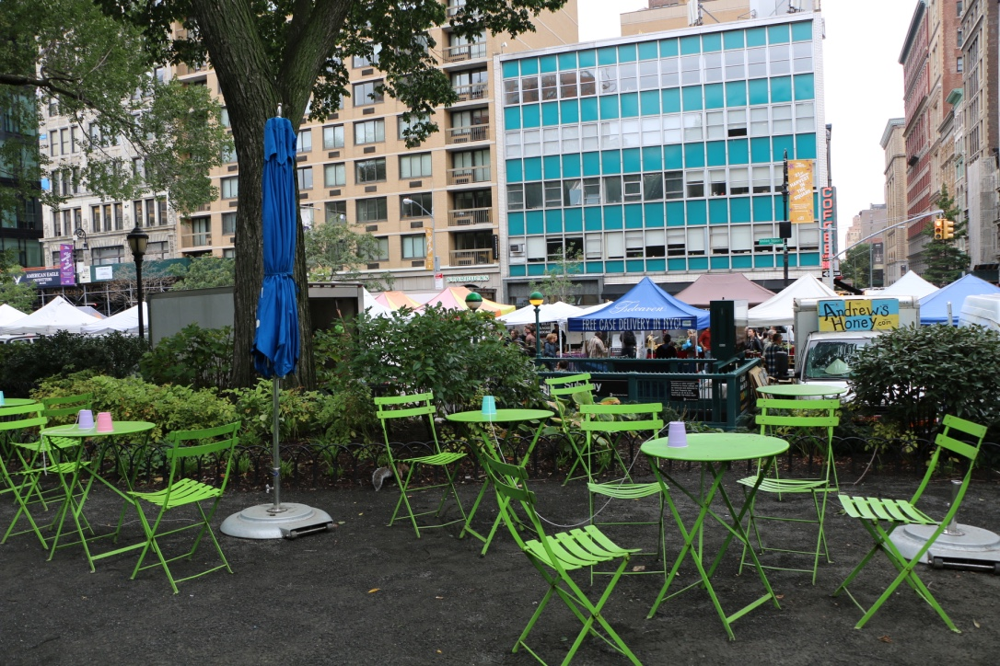As we watched, no two strangers were willing to sit together at a table. Eventually someone became interested in the cup phone placed on her table, and turned to a woman eating lunch behind her, inviting her to test them out.
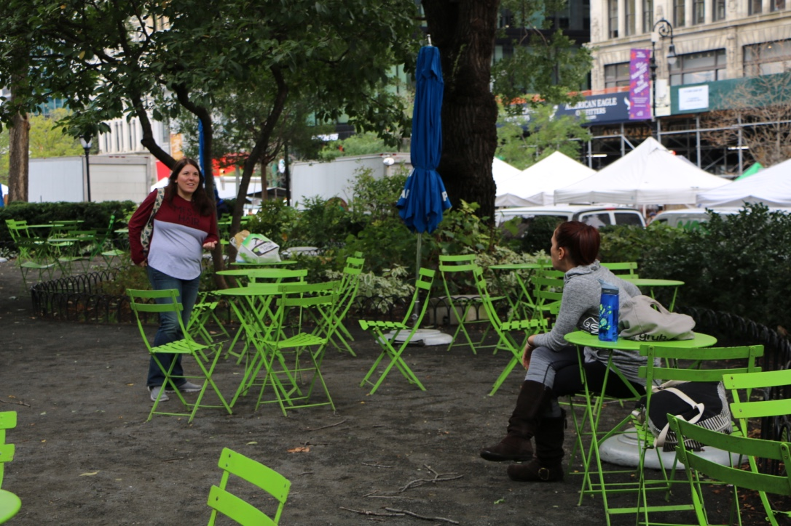While at first the conversation was halted, the strangers remembered the game from childhood. While they didn't share any intimate details about their lives, they did have a good time, laughing and bonding over the unique experience.
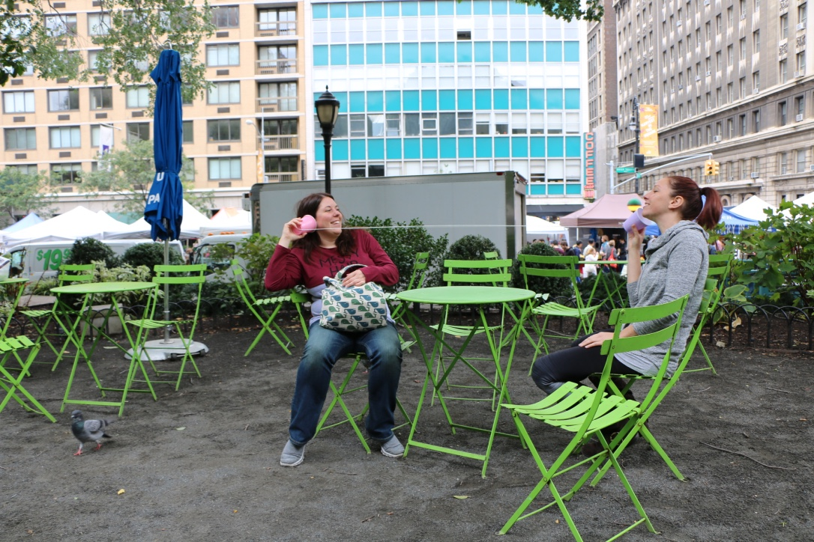Interesting enough, when we checked back on the area after testing other prototype versions, the women had moved tables, and were now eating lunch together. We noticed them walking out of the park together about 40 min later.
The simple prototype was a success. Although it didn't receive much attention, the cold weather was prohibiting many people from taking a break in the park. The attention it did receive ranged from intrigue to experimentation, leading the generation of one extended interaction.
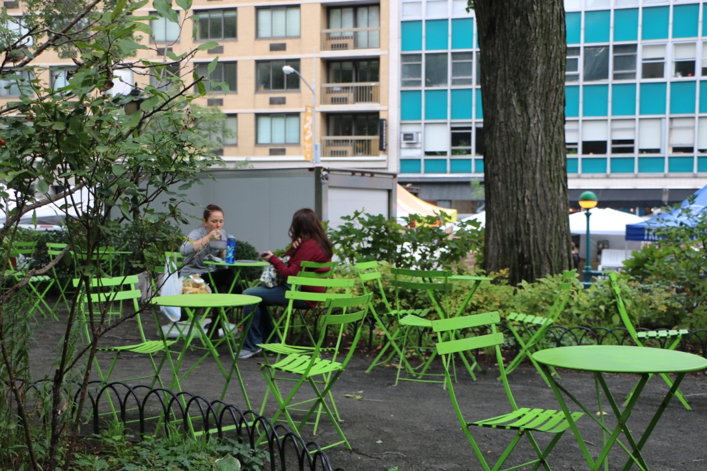We asked the strangers to do a quick interview to give us feedback on our prototype. They felt that it was attention grabbing, and believe that although they might have smiled with out the excuse of the phones they most likely wouldn't have actually spoken.
Prototype1 - Strangers Interview from roxanne farkas on Vimeo.
Prototype 2
To test our second iteration of the prototype, we moved to the benches just outside of the seating area. This spot was a bit more protected from wind, and we thought that people might be more likely to stop.
We saw a lot of passers by stop and look at the piece, but most just smiled knowingly and continued walking.
After some time had passed, strangers eventually sat down. Sitting across the path on a park bench from them, I recorded the interaction. Interestingly, they began to sing into the cups. It was a song that they both knew, and brought out positive emotions. They began to laugh, and had an opportunity to connect.
Prototype 2 - Strangers' Interaction from roxanne farkas on Vimeo.
Unfortunately I became a bit too excited by their positive response, and the male participant caught on that I was recording. He thanked me at the end of the video, but perhaps that is just another interaction between us. In normal circumstances an average New Yorker would be extremely perturbed by catching someone recording them, but in this case the strangers was grateful for having been given a new experience.
Prototype 3
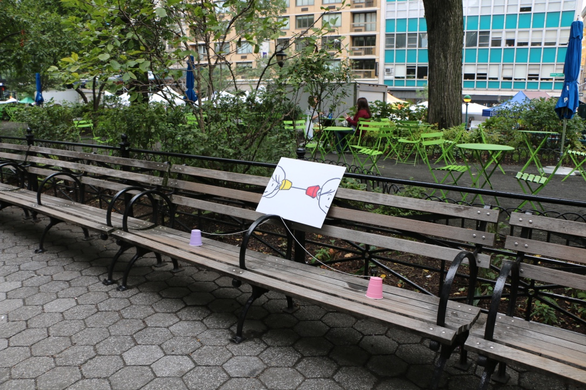The third prototype did not generate much interaction. While some people stopped and looked, we were unable to get any strangers to interact with the piece.

We placed one of our group members as a prop. We figured if strangers saw her interacting with the piece, they might be tempted to join her. This work as well as we had hoped. A lovely and his dog stopped to talk about the piece, but were not interested enough to test it out.

Prototype 4
Our last test for the day involved us using both signs as instructions. The use of two signs didn't attract many participants. It was afternoon by this time, and The Greenmarket, Union Square's farmers market, was winding down.
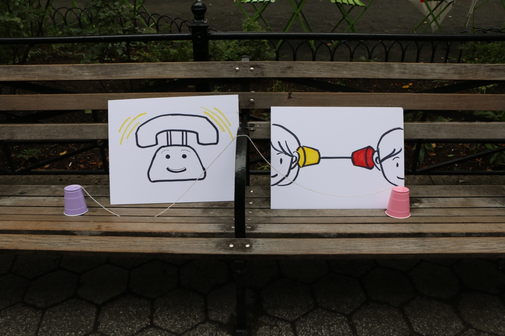Market was winding down. I think that the presentation looked too crowded, almost as if someone has simply left some supplies on a bench.
Prototype 5
Prototypes 5 and 6 were done on the second day of prototyping. After reviewing the first 4 prototypes, we wanted to provide some sort of incentive for strangers to interact with the piece.
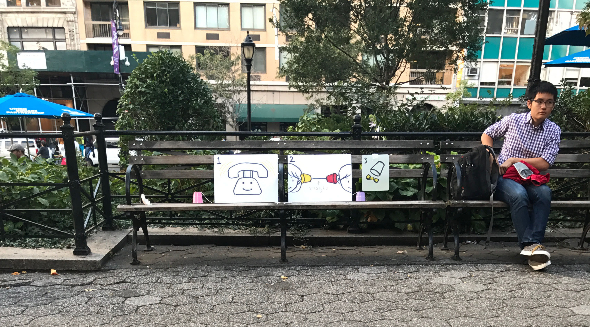The first incentive tried was placing candy in the cups. This prototype was not successful because the passersby were not able to see the candy in the cups, and therefore it did not serve as an attraction but as a reward. Also, strangers may have been hesitant to take candy from an unknown source.
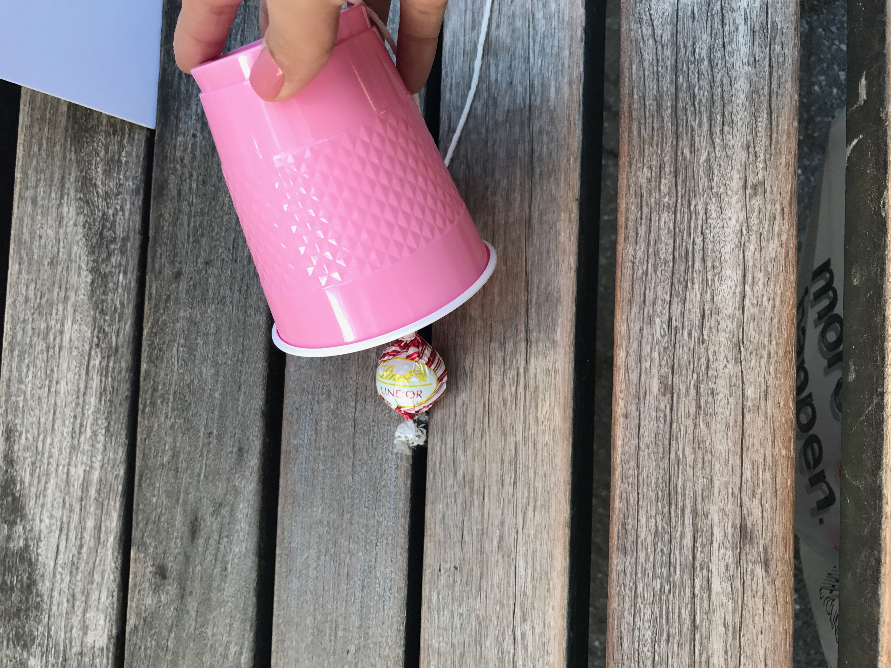Prototype 6
In order to create more of an attraction, we wanted to incorporate sound. To create a feeling of emergency to answer the cup phones, we included the sound of a phone ringing. This sound provides a clear instruction to strangers, as it sound they have been conditioned to react to in a certain way.
Prototype 6- Phones Ringing from roxanne farkas on Vimeo.
We accomplished this by placing an iphone under the cup. While we did accomplish our goal of attracting strangers, the prototype became problematic when it gave the impression that the iphone was a prize! While this still got strangers to react with the piece, it didnt achieve the inteded result as we had to intervene in order to reclaim the iphone.
Conclusion
Simpler prototypes attracted more attention and more successful in accomplishing our goal then those with more indicators. The more visual details present, the harder it seemed for strangers to be able to interpret the instruction set.
As a next step we want to combine prototype 6, with a visual map on the ground. Using a bluetooth speaker instead of a phone, we would create a ringing noise under one of the cup phones. The goal of this is to get strangers to sit down and play the game. Strangers would have to trace the lines on the ground to see who they were connected to and begin talking.
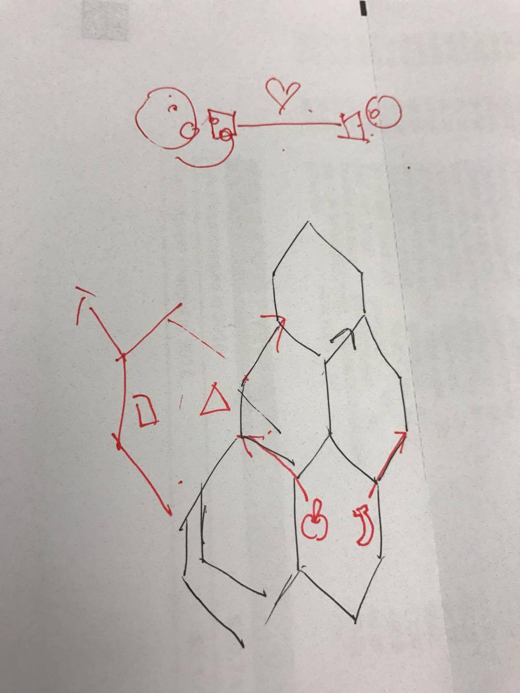